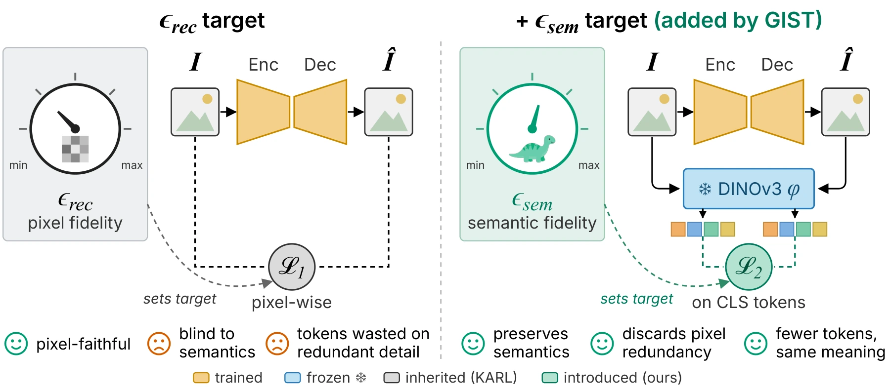
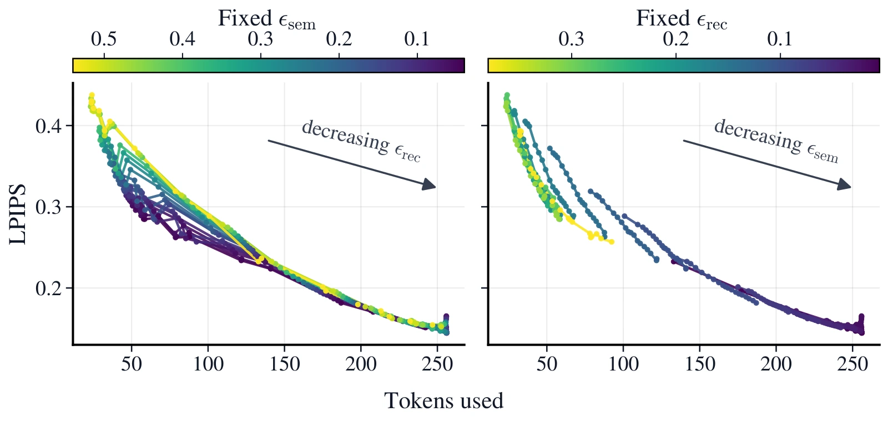

Raising the reconstruction target εrec lets each tokenizer halt more of its 256 tokens.
In these examples, KARL†’s reconstructions collapse into artifacts under heavy compression, while GIST’s additional semantic target (εsem = 0) helps keep the subject recognizable.
“Humans can recognize the gist of a novel image in a single glance, independent of its complexity.”
TL;DR
GIST is an adaptive image tokenizer whose token allocation is jointly controlled by pixel-level and semantic target errors.
Semantic error is measured in DINOv3 feature space.
Fixing the semantic target at zero enables semantic protection: as the pixel target is relaxed, GIST discards tokens encoding redundant detail while retaining those essential to the image's meaning.
Abstract
Adaptive image tokenizers compress an image into a variable number of tokens matched to its complexity, and recent work makes this allocation controllable: conditioned on a target reconstruction error, the tokenizer itself decides how many tokens an image needs.
However, the fidelity measure guiding this allocation shapes which aspects of the image are preserved under compression.
The pixel-wise error used in prior work is blind to the spatial structure that carries an image's meaning, and under heavy compression such tokenizers are prone to abruptly discarding tokens that encode essential content.
We introduce GIST (Guided Image Semantic Tokenizer), an adaptive tokenizer that can be steered toward a requested semantic fidelity.
Its token allocation is jointly controlled by pixel-level and semantic target errors, with semantic error measured in the feature space of a frozen DINOv3 encoder.
This joint control enables semantic protection: with the semantic target fixed at zero, the reconstruction target can be relaxed to discard pixel detail while preserving what the image depicts.
In a controlled comparison on ImageNet-100, GIST outperforms its pixel-controlled counterpart KARL at every token count, with up to 30% lower LPIPS and 37% lower DreamSim.
On average, lowering its semantic target reduces LPIPS 2× faster per token than lowering the reconstruction target, and up to 5× in the low-token regime.
Semantic fidelity is thus an effective control signal for adaptive tokenization: it lets a tokenizer see, and so preserve, what an image depicts.
How GIST works
GIST is an adaptive image tokenizer whose token allocation is jointly controlled by pixel-level and semantic target errors.
These targets guide both the number of tokens and the information they encode.

GIST's εrec specifies a target for pixel-wise reconstruction error, while εsem specifies a target for error in DINOv3 feature space.
Both targets condition the encoder as learned embeddings.
01
Set the target errors
Set εrec for pixel-wise error and εsem for error in DINOv3 feature space.
Lower targets request higher fidelity.
02
Allocate tokens
The encoder processes the image and both targets.
A learned halting MLP selects which tokens remain active.
03
Reconstruct the image
The decoder reconstructs the image from the active tokens.
Tokenization requires a single forward pass, with no search over token counts.
DINOv3 provides the semantic target error during training. It is not required at inference.
Steer both targets
Pick a point on the target grid. Each cell is one GIST encoding at T = 256, and its color shows how many tokens GIST keeps for that pair of targets.
Moving down lowers εsem and asks for more semantic fidelity; moving left lowers εrec and asks for more pixel fidelity.
εsem semantic target →
εrec pixel target →
tokens kept
Protected and Unprotected share εrec = 0.24 and differ only in εsem.
Original
Tokens kept
48 / 256
LPIPS
0.20
DreamSim
0.10
Better reconstructions at every token count
All models are trained from scratch under identical conditions with the official KARL training script; KARL† is the resulting baseline.
The curves are obtained at T = 256 by varying εrec for KARL† and GIST (fixing εsem = 0), and by varying εsem for GIST-1, which is conditioned on the semantic target alone.
KARL†
GIST-1
GIST
Mean tokens used against reconstruction quality. The shaded regions highlight GIST's reduction in reconstruction error relative to KARL† at matched token counts.
The COCO curves use the ImageNet-100 models without further training.
30%lower LPIPS than KARL† at matched tokens (best case, ImageNet-100)
37%lower DreamSim at matched tokens (best case, ImageNet-100)
2×faster LPIPS reduction per token from lowering εsem rather than εrec, up to 5× with few tokens
Semantic control is more token-efficient
Lowering the semantic target εsem improves perceptual quality more efficiently than lowering the reconstruction target εrec.
The LPIPS reduction per added token is twice as large on average, and up to five times as large at low token counts.
This suggests that semantic control prioritizes information that preserves the image's semantic identity.

LPIPS trajectories of GIST as one target is lowered while the other is held fixed. Color indicates the value of the fixed target.